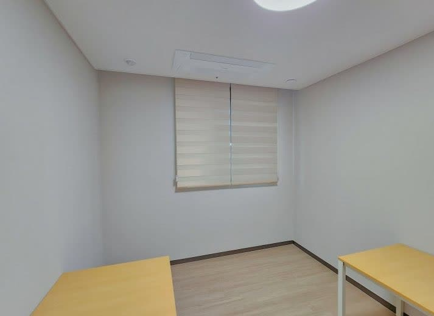
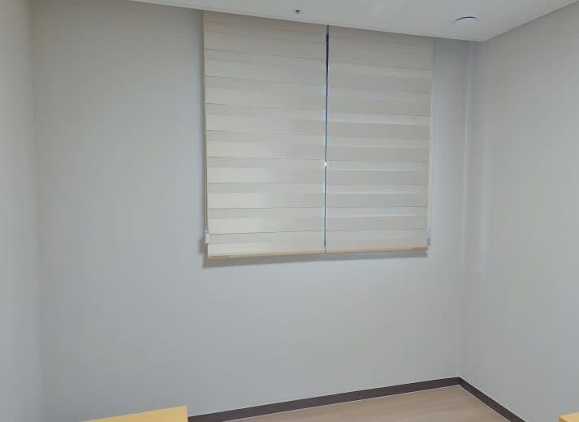
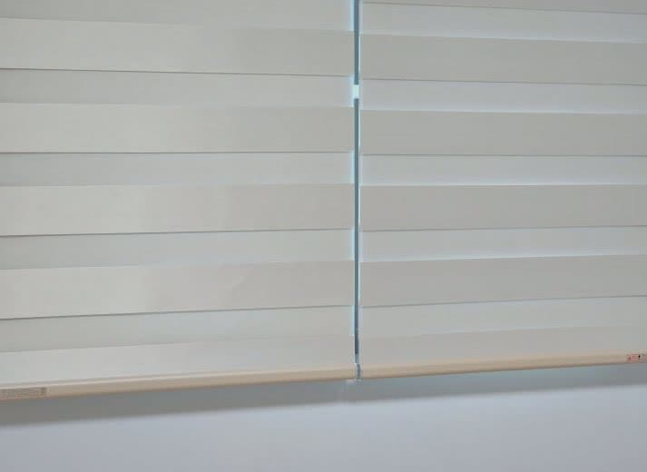
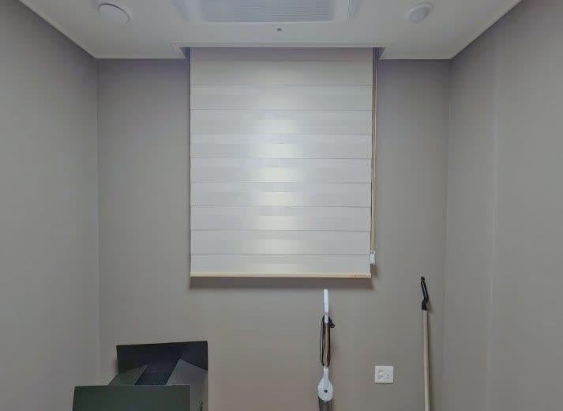

2026년 7월 13일 시공
의성 기숙사
아이보리 암막 콤비블라인드 시공후기

의성의 기숙사·사택형 원룸 건물에 다녀왔습니다.
여러 세대에 방과 다용도실이 딸린 구조라 창도 그만큼 많은 현장이었습니다.
상담 때 담당자분이 가장 신경 쓰신 부분은 사람마다 생활이 다르다는 점이었습니다.
교대 근무처럼 낮에 주무시는 분도 계시고, 낮 시간대에 지내는 분도 계셨거든요.
그래서 평소엔 은은하게 빛을 들이면서 바깥 시선은 가려주고, 자야 할 때는 확실히 어둡게 만들 수 있어야 했습니다.
이 두 가지를 제품 하나로 다 잡고 싶어 하셨습니다.
이런 요구에는 암막 콤비블라인드가 잘 맞습니다
콤비블라인드는 앞뒤 두 겹의 원단이 겹쳐 있는 구조입니다.
슬랫을 나란히 겹치면 빛과 시선을 부드럽게 가려주고, 살짝 어긋내면 그 틈으로 빛이 들어옵니다.
완전히 내리면 암막 원단이 겹쳐져 방을 충분히 어둡게 만들어 줍니다.
낮에 쉬는 분은 어둡게, 활동하는 분은 은은하게 — 같은 블라인드 하나로 각자 생활에 맞춰 조절할 수 있다는 게 이 방식의 장점입니다.

전 실을 아이보리 한 톤으로 통일했습니다
색은 전 실을 아이보리로 통일했습니다.
방마다 벽지 톤이 조금씩 달랐는데, 밝은 회색도 있고 연한 톤도 있었습니다.
아이보리는 어느 벽지에나 자연스럽게 얹혀서, 어느 방 문을 열어도 같은 분위기가 나도록 맞추기 좋은 색입니다.
여러 사람이 오가는 기숙사에서는 방마다 제각각이기보다, 이렇게 톤이 하나로 정리된 편이 훨씬 깔끔하고 관리하기도 편합니다.

방마다 실측을 다시 하고, 넓은 창은 두 폭으로 나눴습니다
작업 자체는 손이 많이 갔습니다.
같은 건물이라도 방마다 창 크기가 조금씩 달라, 대충 비슷하겠거니 하지 않고 방마다 창을 하나씩 다시 실측했습니다.
원룸 창은 몇 센티만 어긋나도 옆으로 빛이 새거나 원단이 벽에 쓸려서, 시간이 걸려도 정확히 재는 게 맞습니다.

창폭이 넓은 방은 한 폭으로 덮으면 원단이 무거워지고 작동이 뻑뻑해져서, 두 폭으로 나눠 달았습니다.
두 폭으로 나누면 가운데 이음선이 생기는데, 여기서 양쪽 슬랫 높이가 어긋나면 눈에 확 띕니다.
그래서 나란히 내렸을 때 이음선이 자연스럽게 이어지도록 양쪽 높이를 최대한 맞췄습니다.
작은 차이지만, 이게 맞아야 방이 정돈돼 보입니다.

방마다 직접 올렸다 내려보며 마무리했습니다
다 달고 끝이 아니라, 방마다 블라인드를 직접 올렸다 내려보며 작동을 확인했습니다.
원룸은 한번 세를 놓으면 한동안 손보기 어려운 곳이 많아서, 처음에 제대로 잡아두는 게 중요합니다.
줄 당김은 부드러운지, 완전히 내렸을 때 빛이 새지 않는지, 겹쳤을 때 은은하게 정리되는지 — 방 하나하나 점검하고 마무리했습니다.
기숙사나 사택, 원룸처럼 여러 창을 한 번에 정리해야 하는 곳은, 톤을 통일하고 방마다 정확히 실측하는 것만으로도 완성도가 확 달라집니다.
낮에 쉬는 분이 있는 공간이라면 빛 조절과 암막을 함께 잡는 콤비블라인드가 특히 잘 맞습니다.
의성을 포함한 대구·경북 전 지역, 세대 수 많은 현장도 찾아갑니다.